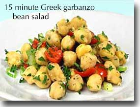

Rich in protein and dietary fiber, this fresh-tasting salad provides 11% of your Daily Value (DV) for protein and 26% DV for dietary fiber. It only takes minutes to prepare and gets tastier the longer it marinates. Make this quick and easy recipe a regular addition to your Healthiest Way of Eating.
Prep and Cook Time: 15 minutes
Ingredients:
Directions:
Serves 4
Nutritional Profile

In order to better help you identify recipes that feature a high concentration of nutrients for the calories they contain, we created a Recipe Rating System. This system allows us to highlight the recipes that are especially rich in particular nutrients. The following chart shows the nutrients for which 15-Minute Greek Garbanzo Bean Salad is either an excellent, very good, or good source (below the chart you will find a table that explains these qualifications). If a nutrient is not listed in the chart, it does not necessarily mean that the recipe doesn't contain it. It simply means that the nutrient is not provided in a sufficient amount or concentration to meet our rating criteria. (To view this recipe's in-depth nutritional profile that includes values for dozens of nutrients - not just the ones rated as excellent, very good, or good - please use the link below the chart.) To read this chart accurately, you'll need to glance back up to see the ingredients used in the recipe and the number of serving sizes provided by the recipe. Our nutrient ratings are based on a single serving. For example, if a recipe makes 4 servings, you would be receiving the nutrient amounts listed in the chart by eating 1/4th of the combined ingredients found in the recipe. Now, returning to the chart itself, you can look next to the nutrient name in order to find the nutrient amount it offers, the percent Daily Value (DV%) that this amount represents, the nutrient density that we calculated for this recipe and nutrient, and the rating we established in our rating system. For most of our nutrient ratings, we adopted the government standards for food labeling that are found in the U.S. Food and Drug Administration's "Reference Values for Nutrition Labeling."Read more background information and details of our rating system.
| Nutrient | Amount | DRI/DV(%) | Nutrient Density | World's Healthiest Food Rating |
|---|---|---|---|---|
| molybdenum | 64.87 mcg | 144 | 20.1 | excellent |
| vitamin C | 41.04 mg | 55 | 7.6 | excellent |
| manganese | 0.96 mg | 42 | 5.8 | very good |
| folate | 149.18 mcg | 37 | 5.2 | very good |
| vitamin B6 | 0.48 mg | 28 | 3.9 | very good |
| copper | 0.21 mg | 23 | 3.2 | good |
| fiber | 6.45 g | 23 | 3.2 | good |
| vitamin A | 202.23 mcg RAE | 22 | 3.1 | good |
| chromium | 7.84 mcg | 22 | 3.1 | good |
| phosphorus | 117.47 mg | 17 | 2.3 | good |
| iron | 2.24 mg | 12 | 1.7 | good |
| potassium | 562.28 mg | 12 | 1.7 | good |
| protein | 5.60 g | 11 | 1.6 | good |
| World's Healthiest Foods Rating | Rule |
|---|---|
| excellent | DRI/DV>=75% OR Density>=7.6 AND DRI/DV>=10% |
| very good | DRI/DV>=50% OR Density>=3.4 AND DRI/DV>=5% |
| good | DRI/DV>=25% OR Density>=1.5 AND DRI/DV>=2.5% |
In-Depth Nutritional Profile for 15-Minute Greek Garbanzo Bean Salad